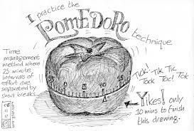

New Business

The focus period of the Pomodoro Timer will be 25 minutes. Each break will be 5 minutes. They can set up mutliple focused and break periods that will introduce the longer break of 15 to 30 minutes for every 4 times
they have a focus period. For example, if they have 8 focused periods, there will be 8 breaks but the 4th and 8th will be 15-30 minutes instead of 5 minutes.
Everyone voted for Prescott to be the group leader because of his experience in the industry actually doing so.
Bryan, Brandon, and Jake are all well versed in javascript. Prescott, Anthony, and Ron have all learned a lot of HTML and CSS. Dylan, Drake, Tom, and Raul have a lot of knowledge about back-end development.
The work will be split up accordingly with mini-team dividing up the work given to them evenly. Moreover, people from each specialized mini-team are allowed to help the other teams if they need it.